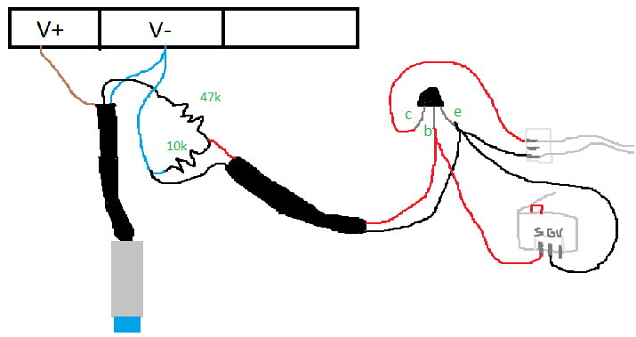

In this guide I will explain how to add an inductive sensor for Z axis homing to an Ender 3 printer
For this project you will need:
* an inductive sensor
* an NPN BJT (transistor) such as 2n2222 or 2n2222a
* a 20 mm (or greater) female-to-female dounpont cable or 2 female-to-male doupont cables
* some cables to solder
* 2 resistors (I will explain which ones)
* not needed but recommended: a multimeter
the sensor I used is the first that I found on ebay: an LJ12A3-4-Z/BX, but you can buy any NPN sensor that works with 24V and has a detection distance equal or greater than 4mm if you want to print the "Ender 3" bed surface instead of printing directly on the aluminium surface.
The sensor comes with 3 cables:
* Brown cable: 6-36V (ender 3 psu gives 24V, so it's ok)
* Blue cable: GND
* Black cable: signal
Before starting to work with the black cable, check if the sensor works by plugging the brown cable to one of the 2 available "V+" outs in the PSU, and do the same with the blue one, which must be wired to one of the 2 available "V-" outs.
WARNING: when working with the power supply, make sure the power cable is not plugged into the wall
When you finished wiring the sensor, you can check if it works by bringing a metallic object near to it. If the led turns on, the sensor works, otherwise it doesn't or you didn't wire it correctly.
Now, you can work with the black cable, and in particular, you have to create a voltage divider that will supply a voltage lower than 5V, because in case something goes wrong, and the board pin receives 24V, it will be burned.
In my case I created a voltage divider with a common 10k resistor and a 47k one. If you have different resistors, you can make your own circuit, the important is that the output voltage is lower than 5V, which measure with a multimeter

After that, you will need use an NPN transistor, (I used a 2N2222A), which will work as a switch.
The board pins responsible of the Z axis endstop are:
* a pin that supplies a voltage of 5V and a current of about 0.6 mA
* a pin that receives the current of the first pin, just as an arduino pin set as INPUT
When the button of the endstop (normally closed) is pressed, the circuit is opened, the input pin detects it, and stops the motor.
You can reproduce this behavior with a transistor: when the sensor is not triggered, the current will flow in the base, and the transistor will behave as a closed switch (the input pin will receive 0.6 mA).
Instead, when the sensor is triggered by the alluminium bed or any other metallic object, the current will not flow in the base, and the transistor will work as an open switch (the input pin will not receive any current).
you can check the circuit:

Personally, I tried to remove the mechanical endstop from the printer, but after some experiments, the sensor didn't trigger twice, and the nozzle crashed into the bed until i powered off the machine.
To prevent this, you can keep the mechanical endstop which will work in case the sensor won't.
To do that, you will need a female-to-female doupont cable of about 20 mm that you will split down in the middle.
Now, you can solder one cable to the one that goes to the base of the transistor and connect the other side to the "S" pin of the endstop.
The other cable must be soldered to the ground one, and the other side must be connected to the "G" pin of the endstop.
Now, when the button of the endstop is pressed by the printer, all the current will be shorted to the ground, instead of going to the base of the transistor, which will work as an open switch

Simple wiring diagram:

That's all for the electrical part, you can now fix the sensor to the printer using a bracket.
If your sensor's thread is M12, you can print this one:
https://www.thingiverse.com/thing:4507029
Once the sensor is fixed, you can start tuning Marlin 1.1.X firmware. In case you didn't flash a bootloader to the printer's board, you will have to do it.
There are plenty of tutorials on the Internet on how to burn a bootloader to the ender 3 board, so, just follow one of them.
First, you have to overwrite marlin stock configs with the ender 3 ones you can find here https://github.com/MarlinFirmware/Configurations
Here are the flags you have to edit/uncomment:
* X_BED_SIZE -> in case you printed my bracket, set it to 210
* X_PROBE_OFFSET_FROM_EXTRUDER -> in case you printed my bracket, set it to 42
* Y_PROBE_OFFSET_FROM_EXTRUDER -> in case you printed my bracket, set it to 0
* Z_PROBE_OFFSET_FROM_EXTRUDER -> in case you printed my bracket, set it to 0
* LEFT_PROBE_BED_POSITION -> in case you printed my bracket, set it to 42
* MULTIPLE_PROBING 2 -> uncomment
* AUTO_BED_LEVELING_BILINEAR -> uncomment
* RESTORE_LEVELING_AFTER_G28 -> uncomment
* RIGHT_PROBE_BED_POSITION (X_BED_SIZE - MIN_PROBE_EDGE) -> uncomment
* FRONT_PROBE_BED_POSITION MIN_PROBE_EDGE -> uncomment
* BACK_PROBE_BED_POSITION (Y_BED_SIZE - MIN_PROBE_EDGE) -> uncomment
* Z_SAFE_HOMING -> uncomment
After these changes, the firmware is probably bigger than 128kb, so, you can disable unneeded features such as ARC_SUPPORT or add custom compiler flags as explained here: https://thborges.github.io/blog/marlin/2019/01/07/reducing-marlin-binary-size.html
Demonstration video:
Issues can be reported here: https://github.com/steel71/steel71.github.io/issues
You can also contact me at m.marcaccini01@gmail.com